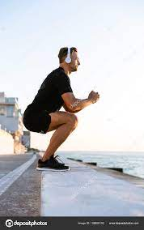

The most common injuries in Basketball occur at the Face, Fingers, Thighs, Knees, Ankles, and Feet. Common injuries for Basketball
include: Ankle Sprains, Jammed Fingers, Knee Injuries, Deep Thigh Bruising, Facial Cuts, Foot Fractures.
Knee Injuries:
For knee injuries we strongly recommend to strengthen the muscles and tendons around the legs through deep range of motion

Jump Squat: Stand with your feet shoulder width apart. Lower into a squat then jump up, pushing off the floor as hard as you can. Land back into
a squat. Repeat for 2 sets, 10 reps each.
Rear-foot elevated split squat: Standing tall, with a wide stance, move on leg backwards and place the foot on a chair at a 90 degree angle.
Slowly lower the knee of the raised leg to the floor and bend the front knee 90 degrees. Push your foot into the floor and toes into the chair. Return to original position.
Repeat for 2 sets, 10 reps each.
Thigh Injuries:
Standing Quad Stretch: Using a something for support, raise on foot behind you. Use the hand on the same side of the body to grasp
the foot at the ankle. Pull your ankle to your body. Keep the knees close and hips forward. Hold for 20-30 seconds. Switch legs.